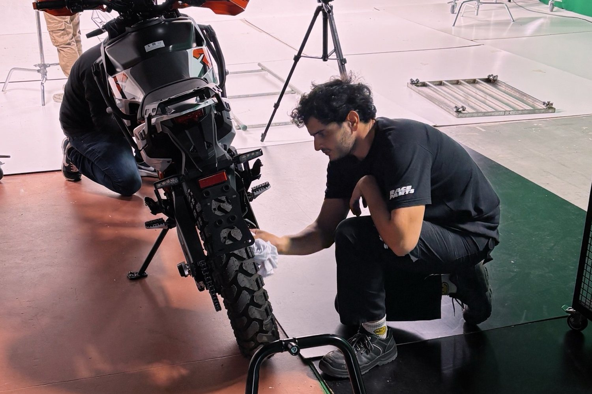

Sobre míAbout
Lisandro Murúa Asis
Diseño y desarrollo de productoProduct design and development
Soy diseñador industrial (UNC) y trabajo en la industria desde 2018. Lidero el diseño y desarrollo de producto en Race Parts, donde trabajo con chapa, tubo, soldadura y mecanizado CNC. Antes desarrollé productos, moldes y herramental en materiales compuestos en Moldear. Soy docente en el Trabajo Final de Diseño Industrial (FAUD/UNC) y me especializo en diseño para fabricación, herramental e ingeniería inversa.
I’m an industrial designer (UNC) and I’ve been working in industry since 2018. I lead product design and development at Race Parts, working with sheet metal, tube, welding and CNC machining. Before that, I developed composite products, molds and tooling at Moldear. I teach in the Industrial Design capstone (FAUD/UNC) and specialize in design for manufacturing, tooling and reverse engineering.
ExperienciaExperience
- Líder de diseño y desarrollo de productoProduct Design & Engineering LeadRace Parts · 2023 – actualidad2023 – present
- Responsable de diseño y matriceríaHead of Design & ToolingMoldear · 2020 – 2023
- Asistente técnicoTechnical AssistantProyectos Termomecánicos · 2018 – 2020
- Profesor asistenteTeaching AssistantDiseño Industrial, FAUD–UNCIndustrial Design, FAUD–UNC
FormaciónEducation
- Diseño IndustrialIndustrial DesignUniversidad Nacional de Córdoba
- Posgrado en Gestión de ProyectosPostgraduate Program in Project ManagementUniversidad Tecnológica Nacional
ReconocimientosRecognition
- Finalista, 11° Concurso Internacional de Diseño SustentableFinalist, 11th International Sustainable Design CompetitionFundación Vivienda DignaVivienda Digna Foundation · 2018
HerramientasTools
SolidWorks, AutoCAD, KeyShot, Photoshop, Figma
IdiomasLanguages
Español (nativo), inglés (avanzado), portugués (básico)Spanish (native), English (advanced), Portuguese (basic)